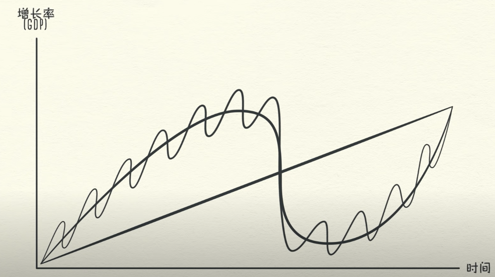

经济机器是怎样运行的 — Ray Dalio
交易由人的天性驱动
三股主要的经济动力：
1. 生产率的提高
2. 短期债务周期
3. 长期债务周期
交易：经济是无数交易的总和，在每次交易中，买方使用货币或信用，向卖方交换商品、服务或金融资产
* 支出总额=花费的货币+花费的信用
* 支出总额是经济的驱动力
* 支出金额除以销量，就得出价格
交易是经济机器最基本的零件，所有的经济周期和动力都是交易造成的
一个市场由买卖同一商品的所有买卖方组成：比如小麦市场、汽车市场等待。把所有市场的支出和销量加在一起，就得到了经济运行所需要的全部信息。
* 个人、企业、银行、政府都在以上述方式从事交易
* 政府有两个重要组成部分：收税和花钱的中央政府和中央银行
* 央行控制着货币数量和信用总额，央行通过影响利率和发行更多货币来实行这种控制
* 信贷是经济中最重要的组成部分，贷款人和借款人如同卖方和买方。
* 贷款人希望自己的钱生出更多的钱，借款人希望购买当前无法负担的某种东西。（比如房子、汽车、开办企业）
* 借贷可以同时满足贷款人和借款人的需要。
* 借款人保证偿还借款，称为本金；并支付额外的款额，称为利息。
* 利率高时，借贷就会减少，因为贷款变得昂贵；利率低时，贷款就会增加，因为贷款变得便宜。
* 如果借款人保证偿还债务，而且贷款人相信这一承诺，信贷就产生了。信贷一旦产生，立即成为债务。
* 债务是贷款人的资产，借款人的负债。等借款人偿还了贷款并支付了利息，这些资产和负债将消失，交易得以完成。
* 为什么信贷如此重要？因为借款人一旦获得信贷，便可以增加自己的支出，支出是经济的驱动力，一个人的支出是另一个人的收入。如果一个人的收入增加，那么信用度就会增加，贷款人就更愿意把钱借给他。
* 信用良好的借款人具备两个条件：偿还能力和抵押物。收入债务比越高，借款人就具备偿还能力。这样贷款人就可以放心把钱借给他们。所以收入增加，使得借贷也增加，从而能增加支出。由于一个人的支出是另一个人的收入，这就导致借贷进一步增加，并不断循环。这一自我驱动的模式导致经济增长，也正是因为如此，而产生了经济周期。
* 我们的知识随时间而逐渐增多，知识的积累会提高我们的生活水平，我们将此称为生产率的提高。
* 一个善于创新和勤奋的人，将比那些自满和懒惰的人更快的提高生产率和生活水平。
* 生产率在长期内最关键，但信贷在短期内最重要。因为生产率在长期内不会剧烈波动，但是债务是这种动力，因为我们可以在借债时让消费超过产出，但是在还债时让消费低于产出。
* 债务的波动大概有两个周期，其中一个周期大约持续5年到8年，另一个持续75年至100年。
* 经济的起伏并不取决于人们多么善于创新或者勤奋工作，而是主要看信贷的总量。
* 在没有信贷的经济运行中，增加支出的唯一办法是增加收入，因此需要提高生产率和工作量。提高生产率是经济增长的唯一途径。由于我的支出是另一个人的收入，当我或另一个人提高生产率的时候，经济就会增长。如果观察各种交易，加以总结，就会发现一条类似生产率增长轨迹的渐进线。
* 但是由于借贷，而产生了周期，原因不是任何法规，而是人的天性和信贷的运行方式。借债不过是提前消费，为了购买现在买不起的东西，支出超过收入，其实是向未来的自己借钱，给自己设定了一个未来的时间，到那个时候，支出必须小于收入，以偿还债务。这样就制造了一个周期。对于个人是这样，对于整个经济体系也是这样。
* 这就是为什么必须理解信贷，因为信贷触发了一系列机械的和可以预料的，将在未来触发的事件。
* 这就是信贷和货币不同的地方，完成交易需要使用货币。当你在酒吧用现金购买一瓶啤酒，交易立即完成。但是如果用信用来购买一瓶啤酒，比如赊账，你相当于承诺今后为这瓶啤酒付钱。你和酒吧一起创造了一笔资产和一笔负债，你的是一笔负债，酒吧得到了一笔资产。只有今后用货币偿还了这笔赊账之后，上述资产和负债才会消失，交易才会了结。
* 现实生活中大部分的钱其实是信贷，美国的信贷总额大概50万亿美元，而货币总额只有大概3万亿美元。
* 在没有信贷的经济体系中，增加支出的唯一办法是增加生产。但是在有借贷的经济运行中，还可以通过借债增加支出。因此有信贷的经济运行能增加支出，使得收入的增长速度在短期内超过生产率的增长速度。
* 信贷并不是坏事，只是会造成周期变化。
* 超过偿还能力的过度消费，就是不良信贷。但是如果信贷能高效地分配资源和产生收入，让你能偿还债务，就是良性信贷。例如如果借钱购买一个大彩电，电视剧不会带来任何收入偿还债务；但是如果借钱买一台拖拉机，用来收获更多的庄稼，赚更多的钱，就能偿还债务，赚更多的钱。
在有信贷的经济体系中，我们可以观察信贷如何带来经济增长：
* 假如你年收入10万美元，并且有不错的信用，可以借1万美元，因此你每年可以花11万美元，即使你的收入只有10万美元；由于你的支出是另一个人的收入，因此另一个人因此挣了11万美元，这个人如果没有任何债务，就可以借1.1万美元，他可以消费12.1万美元，即使他的收入只有11万美元；由于他的支出是另一个人的收入，我们通过跟踪各种交易，可以看到这个过程不断强化。
* 借债形成周期，周期会上升，也会下降。
短期债务周期：
* 随着经济活动的扩张，出现了扩张，这是短期债务周期的第一个阶段。支出继续增加，价格开始上涨，导致支出的是信贷，而信贷可以凭空产生。如果支出和收入的增长速度超过所出售商品的生产速度，价格就会上涨。我们把价格的上涨称为通货膨胀。
* 央行不希望通货膨胀的速度过高，因为这会导致很多问题；央行看到价格上涨时，就会提高利率，有能力借钱的人就会减少，现有的债务成本就会上升；由于人们减少借贷，并且还款额增加，剩下了用于支出的资金将减少，因此支出速度放慢。而由于一个人的支出是另一个人的收入，环环相扣，人们的收入水平将下降。由于支出减少，价格将下跌，称为通货紧缩。经济活动减少，经济便进入衰退。
* 如果衰退过于严重，并且通货膨胀不再称为问题，央行将降低利率，使经济重新加速。随着利率降低，偿债成本下降，借债和支出增加，出现另一次经济扩张。
* 在短期债务周期中，限制支出的唯一因素是贷款人和借款人的贷款和借款意愿。如果信贷易于获得，经济就会扩张；如果信贷不易获得，经济就会衰退。这个周期主要由央行控制。短期债务周期通常持续5—8年，并且在几十年内不断反复。
长期债务周期：
* 但是在每个周期的低谷和高峰后，经济增长和债务都将超过上一个周期。这个是人的天性促成的：因为人倾向于借更多钱，却不喜欢偿还债务。因此，在长期内，债务的增加的速度将超过收入，从而形成长期债务周期。
* 尽管人们的债务增加，但是贷款人会提供更宽松的信贷条件，这是为什么？大家都以为形势一片大好，人们仅会注意最近出现的情况。收入一直在增加，资产价值上升，股票市场欣欣向荣。现在是繁荣时期，用借来的钱购买商品、服务、金融资产很划算。当人们过度借贷消费时，泡沫就产生。尽管债务一直增加，但收入也以相近的速度增加，从而抵消了债务。债务和收入的比例称为债务负担，只要收入继续上升，债务负担就可以承受。于此同时，资产价值迅速上升，人们大量借钱来购买资产，因为投资促使资产价格日益升高。因此，尽管积累了大量债务，收入和资产价值的上升，帮助借款人在长期内保持良好的信用度。
* 但是这种情况无法永久持续下去，也确实没有持续下去。几十年来，债务负担缓慢增加，使得偿债成本越来越高，到了一定时候，偿债成本的增加速度超过收入，迫使人们削减支出。由于一个人的支出是另一个人的收入，收入开始下降。人们的信用因此降低，致使借贷减少。偿债成本继续增加，使得支出进一步减少，周期开始逆转。这时到达长期债务周期的顶峰，债务负担变得过重。美国欧洲和世界上很多其他地区在2008年发生这一情况，日本在1989年，美国在1929年因同一原因发生了这一情况。
* 现在经济进入去扛杠化时期。在去杠杆化时期，人们削减支出，收入下降，信贷消失；资产价格下跌，银行发生挤兑，股票市场暴跌，社会紧张加剧。这个过程开始下滑并形成恶性循环，随着收入下降和偿债成本增加，借款人倍感拮据；随着信用消失，信贷枯竭，借款人再也无法街道足够的钱来偿还债务。借款人竭力填补这个窟窿，不得不出售资产，出售热潮使得市场充斥待售资产。股票市场暴跌，不动产市场一蹶不振，银行陷入困境。随着资产价格下跌，借款人能提供的抵押物价值下降，这进一步降低了借款人的信用。支出减少、收入减少、财富减少、信贷减少、借债等等随之减少，这是一个恶性循环。看起来与短期周期的衰退相似，但不同之处是，无法通过降低利率来挽回局面。因为借债人的债务负担过重，无法通过降低利率来减轻；贷款人意识到，债务过于庞大，根本无法足额偿还。整个经济体和个人都失去了信用度。
* 问题在于：债务负担过重，必须减轻，可以采用四种办法。个人企业政府削减支出、通过债务违约和重新来减少债务、财富再分配将财富从富人转给穷人、央行发行货币。
* 削减支出：当借款人不再借入新的债务，并开始减少旧的债务时，支出减少。但一个人的支出是另一个人的收入，这就导致收入下降。收入下降的速度超过还债的速度，因此债务负担实际更为沉重，引起通货紧缩，令人痛苦。企业不得不削减成本，这意味着工作机会减少，失业率上升，所以必须减少债务。
* 减少债务：很多借款人无法偿还贷款，而借款人的债务是贷款人的资产，如果借款人不偿还银行贷款，人们会担心银行无法返还其存款，因此纷纷从银行取出存款。银行收到挤兑，而个人、企业和银行出现债务违约，这种严重的经济收缩就是萧条。萧条的一个主要特征是：人们发现，他们原来以为属于自己的财富中，有很大一部分实际并不存在。比如说当你用赊账的方式在酒吧买一瓶啤酒时，是在承诺今后偿还酒吧的赊账，你的承诺成为酒吧的一项资产，但是如果不兑现承诺，其实是债务违约。那么酒吧的这项资产其实一文不值，是消失了。很多贷款人不希望债务消失，同意债务重组。债务重组意味着贷款人得到的还款减少，或者偿还期延长，或者利率低于当初商定的水平。合约被破坏，债务减少，但贷款人希望多少收回一些债务，总好过于血本无归。债务重组让债务消失，但是它导致资产和收入以更快的速度消失，债务负担日趋沉重，引起通货紧缩。政府的收入减少，但是失业者增多需要政府援助，政府需要增加支出和制定刺激计划，以弥补经济活动的减少。在去杠杆化过程中，政府预算赤字飙升，因为支出超过税收。
* 财富再分配：政府必须加税和举债，以填补赤字，由于大部分财富集中在少部分手中，所以向富人融资，把财富从富人那里转移给穷人。在贫苦中的穷人开始怨恨富人，承受经济疲弱，资产贬值和增税压力的富人开始怨恨穷人。如果萧条继续下去，就会爆发社会动乱。不仅国家之间的紧张加剧，国家之间也是这样，债务国和债权国之间也是如此。这种局势可能会导致政治变革，有时是极端的变革。1930年代，这种局势导致希特勒掌权，欧洲爆发战争，美国的大萧条。
* 发行货币：人们心目中的货币，其实大部分是信贷，信贷消失，人们的钱会不够花，人们迫切的需要钱。中央政银行可以发行货币。央行已经把利率降到0，现在不得不发行更多的货币。央行通过增加货币的发行量来弥补消失的信贷。发行货币和以上三种方式不同，会引起通货膨胀和刺激经济。并使用这些货币来购买金融资产和政府债券。美国2008年中央银行即联邦储备委员会发行了两万亿美元。资产的价格得以提高，从而提高了人们的信用，但是这仅仅有助于那些拥有金融资产的人。央行只能发行货币，购买金融资产，中央政府可以购买商品和服务，于是他们开始合作。央行通过购买政府债券，其实是把钱借给政府，使其能够运行赤字预算。政府通过刺激计划和失业救济金来增加购买商品和服务的支出，这增加了人们的收入，也增加了政府的债务，但是这个办法可以降低经济中的总债务负担。这是风险很大的时刻。这个办法比其他三种更受欢迎，因此容易被滥用，要避免1920年的德国那样，发行过多的货币，导致通货膨胀。
* 决策者必须平衡以上四种通货紧缩的办法，和通货膨胀的办法，以保持稳定。央行需要让收入的增长率大于所积累的债务的利率，也就是收入一定要比债务增长得快，经济增长缓慢，但是债务负担在下降，如果达成适当的平衡，可以带来和谐的去扛杆化。当收入上升的时候，借款人的信用就会提高，借款人一旦开始显得有信用，贷款人就会恢复贷款，债务负担开始下降，人们可以借到钱，增加消费，经济开始增长，长期债务周期进入通货再膨胀的阶段。这大概需要十年，因为有“失去的十年”之说。
最后，这给我们三条经验法则：
1. 不要让债务的增长速度超过收入，因为债务负担最终将把你压垮。
2. 不要收入的增长速度超过生产率，因为这最终将使你失去竞争力。
3. 尽一切努力提高生产率，因为生产率在长期起着最关键的作用。
